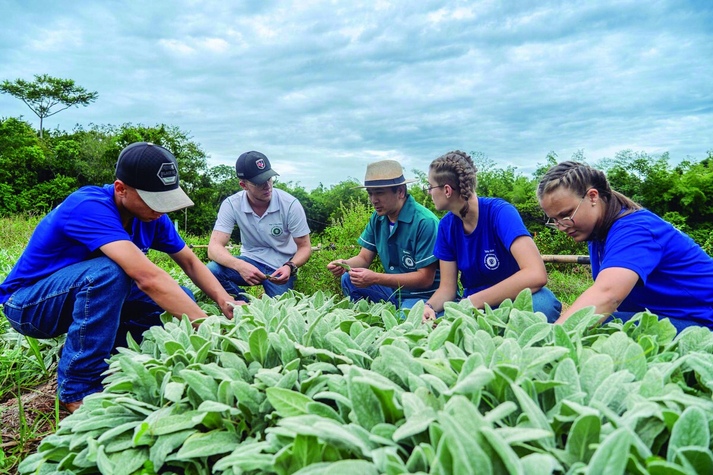
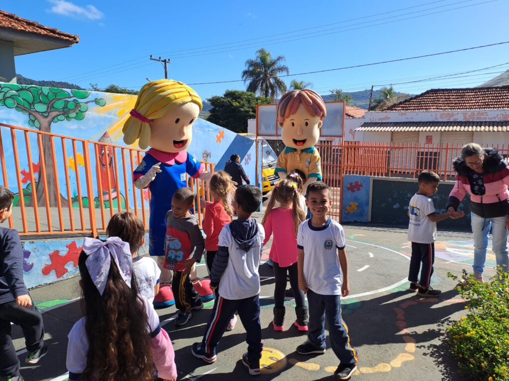
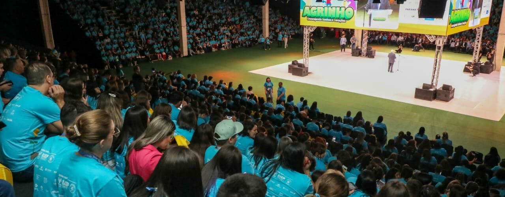

Aqui ésta ums das historias e projetos...

Transformação em Comunidades Rurais
O Agrinho ajudou a transformar a comunidade rural de Santo Antônio, onde alunos desenvolveram projetos de reciclagem que reduziram significativamente o lixo na região.

Educação Ambiental nas Escolas
Em Curitiba, o Agrinho implementou um programa de educação ambiental que envolveu mais de 500 alunos, resultando em um aumento significativo na consciência ambiental entre os jovens.

Projetos Sustentáveis
Na cidade de Maringá, estudantes criaram projetos sustentáveis com foco em energia renovável, inspirando outras escolas a seguirem o exemplo.
